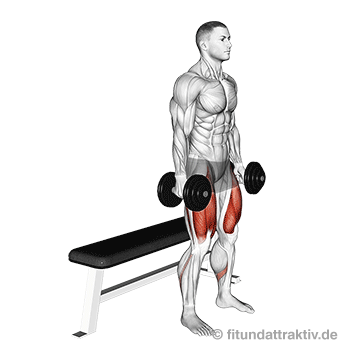
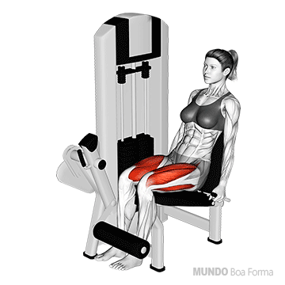
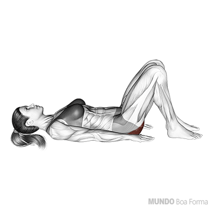

TREINO A: Peito, Tríceps & Ombro (Empurrar)
Fortalecimento articular e hipertrofia com carga livre
1. Supino Reto com Halteres
4 Séries
10 a 12 Reps

Deitado no banco reto. Mantenha os ombros firmes e empurre os halteres para cima de forma controlada.
2. Supino Inclinado com Halteres
3 Séries
10 a 12 Reps

Ajuste o banco em ângulo moderado (30° a 45°). Trabalha a porção superior do peito e ombros.
3. Elevação Lateral com Halteres
4 Séries
12 a 15 Reps

Suba os halteres lateralmente até a altura dos ombros. Mantenha o movimento limpo, sem dar impulsos com o corpo.
4. Tríceps Corda ou Barra na Polia
4 Séries
12 Reps

Mantenha os cotovelos fixos ao lado do tronco e estenda os braços completamente para baixo.
5. Tríceps Teste com Halteres (ou Banco)
3 Séries
10 a 12 Reps

Deitado no banco, flexione apenas os cotovelos trazendo os halteres na direção da testa e estenda suavemente.
TREINO B: Costas, Bíceps & Postura (Puxar)
Fortalecimento dorsal e prevenção de dores na coluna
1. Puxada Alta na Polia
4 Séries
10 a 12 Reps

Puxe a barra em direção ao peito, apertando as costas na descida. Evite inclinar o corpo excessivamente para trás.
2. Remada Curvada com Halteres (ou Remada Serrote)
4 Séries
10 a 12 Reps

Apoie um joelho e mão no banco. Puxe o halter em direção ao quadril, mantendo a coluna reta e firme.
3. Crucifixo Invertido com Halteres
3 Séries
12 a 15 Reps

Incline o tronco à frente e abra os braços para os lados. Fundamental para a saúde do manguito e postura dos ombros.
4. Rosca Direta com Halteres (Sentado ou Em Pé)
3 Séries
10 a 12 Reps

Flexione os braços mantendo a postura ereta e sem balançar o quadril.
5. Rosca Martelo com Halteres
3 Séries
12 Reps

Pegada neutra (palmas viradas uma para a outra). Trabalha braquial e antebraço, reforçando a pegada.
TREINO C: Pernas Básicas, Ombro Desenvol. & Core
Manutenção de membros inferiores sem sobrecarregar joelhos e coluna
1. Agachamento Livre (Peso do Corpo ou Halter Leve)
3 Séries
12 a 15 Reps

Agache como se fosse sentar em uma cadeira, mantendo o calcanhar firme no chão e o peito aberto.
2. Elevação Pélvica / Ponte no Solo
3 Séries
15 Reps

Deitado de costas, eleve o quadril contraindo os glúteos e a parte posterior das coxas. Muito seguro para a lombar.
3. Desenvolvimento de Ombros com Halteres (Sentado)
4 Séries
10 a 12 Reps

Sentado com apoio nas costas, empurre os halteres para cima acima da cabeça de forma controlada.
4. Panturrilha em Pé (Com Peso do Corpo)
4 Séries
15 a 20 Reps

Suba na ponta dos pés, segure 1 segundo no topo e desça devagar. Pode apoiar as mãos na parede para equilíbrio.
5. Prancha Frontal (Sustentação do Core)
3 Séries
30 a 40 seg

Apoie os antebraços e pontas dos pés no colchonete. Mantenha o corpo alinhado e abdômen firme.